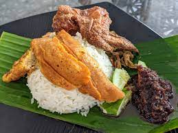

Nasi Lemak

Description
The de facto national dish of Malaysia.
This dish consists of coconut rice with sides including sambal, fried anchovies, and cucumber.
Recipe source: Rasa Malyasia
Ingredients
-
Coconut Milk Steamed Rice
- 2 cups rice
- 3 pandan leaves
- salt (to taste)
- 1 can coconut milk (5.6oz)
- some water
-
Tamarind Juice
- 1 cup water
- tamarind pulp, size of small ping pong ball
-
Sambal Ikan Bilis
- 1/2 red onion
- 1 cup ikan bilis, dried anchovies
- 1 clove garlic
- 4 shallots
- 10 dried chilies
- 1 teaspoon belacan, prawn paste
- 1/4 teaspoon salt
- 1 tablespoon sugar
-
Other Ingredients
- 2 hard boiled eggs, cut in half
- 3 small fish, sardines or smelt fish
- 1 small cucumber, cut into slices then quartered
Steps
- Rinse rice and drain. Add coconut milk, pinch of salt, and water. Add pandan leaves into rice and cook normally.
- Rinse dried anchovies and drain. Fry until they turn light brown and put aside.
- Grind prawn paste, shallots, garlic, and deseeded chilies with mortar and pestle. Slice red onion into rings. Soak tamarind pulp in water for 15 minutes. Squeeze the tamarind constantly to extract flavor into water. Drain the pulp and save the tamarind juice.
- Heat some oil in a pan and fry the spice paste until fragrant. Add in the sliced onion rings. Add in the ikan bilis and stir well. Add tamarind juice, salt, and sugar. Simmer on low heat until the gravy thickens. Set aside.
- Clean the small fish, cut in half, and season with salt. Deep fry. Cut cucumber into slices and then quarter. Plate the coconut rice and pour some sambal ikan bilis on top of rice. Serve with fried fish, cucumber slices, and hard-boiled eggs.